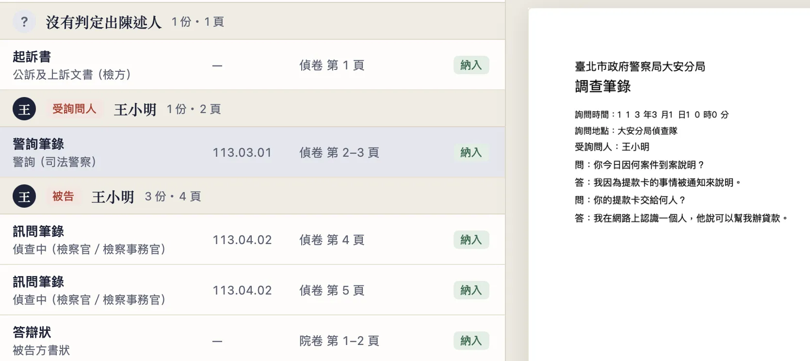
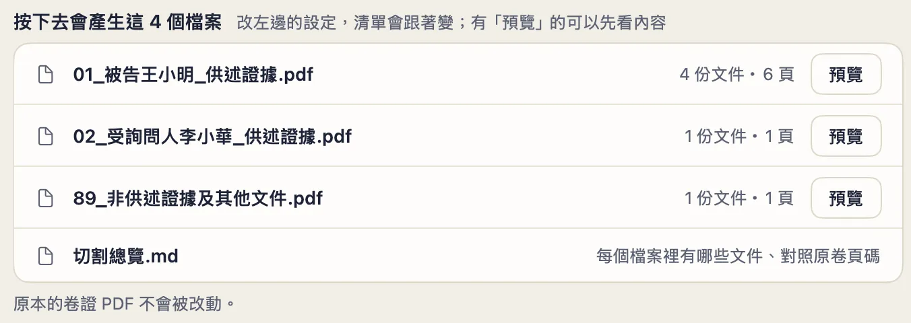
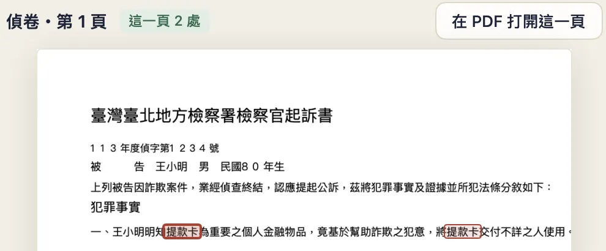
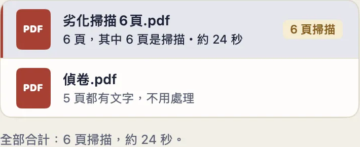

閱卷拿到的電子卷證怎麼整理：加書籤、依陳述人分開筆錄、幾卷一起搜尋
閱卷拿到的 PDF，常常是一整卷連在一起：起訴書、警詢筆錄、訊問筆錄、書狀排成幾百頁，沒有書籤，有些頁是掃描影像，按 ⌘F 也找不到字。這篇用審判工具箱，一步一步把卷整理成找得到東西的樣子。
這篇由審判工具箱的開發者撰寫。App 目前正在準備上架，文中的畫面是送審前的版本；示範用的卷證是自己做的合成卷，裡面的人名（王小明、李小華）都是虛構的。
閱卷回來的 PDF 為什麼難找
一卷電子卷證裡，通常是很多份文件接在一起，中間沒有分隔，也沒有目錄。要找某個證人的每一次筆錄，只能從第一頁往後翻；同一個人的警詢在警卷、訊問在偵卷，還要開兩個檔對照。
掃描的頁面只是影像，PDF 閱讀程式的搜尋找不到上面的字。卷越多，花在「找」的時間就越多。
下面四個步驟都在同一個 App 裡做。每個工具都是放入檔案、確認與預覽、輸出三步；輸出前會先列出會產生哪些檔案，原本的 PDF 不會被改動。
第一步：替整卷加上書籤
用「書籤形成」。放入一卷 PDF，App 會分出起訴書、筆錄、書狀等每一份文件，依證據類型分組（壹、起訴文書；貳、供述證據…）列成清單。
- 點清單的一列，右邊顯示那份文件的頁面，可以邊看邊核對。名稱不對可以改名，不要的從清單移除。
- 可以替這一卷取簡稱（例如「偵卷」）。卷面頁碼和 PDF 頁碼對不上時，填「頁碼偏移」：PDF 第 1 頁是卷面第 5 頁，就填 4。
- 輸出有三種：加了書籤的一份 PDF、依書籤切成一份份 PDF，或依書籤切成一份份 Markdown。

書籤形成一次處理一卷。幾卷都要加書籤，就一卷一卷做。
第二步：依陳述人把筆錄分開
準備交互詰問時，常常要把同一個人歷次的警詢、偵訊筆錄排在一起看。這時用「供述切割」。
放入一卷或幾卷。App 從筆錄判斷陳述人與身分（被告、受詢問人等），把同一個人在不同卷裡的筆錄整理在一起。

- 判斷錯的可以修改陳述人，不要的文件可以排除。
- 輸出設定裡可以選怎麼分檔，例如被告方的書狀要不要併進被告的檔案。
- 輸出的是每位陳述人一份 PDF，另附一份切割總覽。PDF 可以先按「預覽」看。

第三步：幾卷一起找關鍵字
要確認某個詞出現在哪幾頁，用「全文搜尋」。放入一卷或幾卷，第一次會建立搜尋資料；掃描頁要先辨識文字，頁數多時要等一下。
輸入關鍵字，打字時就開始找。用空白隔開幾個詞時，同一頁每個詞都出現才會列出。每筆附卷名、頁碼和前後文，點一筆就顯示那一頁，命中的位置框起來。台與臺、全形與半形、斷成兩行的詞都找得到。
結果

命中的那一頁

全文搜尋不產生檔案。搜尋資料存在這台裝置上，內容等同卷證的文字，可以在 App 的「關於」查看大小並清除。
掃描頁先做成可以搜尋的 PDF
上面的工具遇到沒有文字的頁面，都會自己辨識文字，所以不先處理也能用。想讓掃描檔在其他程式裡也能搜尋、反白、複製，用「可搜尋 PDF」：把辨識出的文字寫回 PDF，頁面看起來不變。

大約每頁 4 秒，已經有文字的頁和空白頁不處理。只處理橫書；直書、很小的字和密集的表格認不完整。
要交給 AI 工具之前
整理好的卷，可以用「PDF 轉 Markdown」轉成文字檔，原頁面和轉出來的文字並排預覽，看過幾頁沒問題再輸出。
要把文字貼給 AI 工具整理爭點之前，可以先用「去識別化」把姓名、身分證字號、電話、地址等換成「姓名A」「身分證A」這類代號。要注意三件事：
- 輸出的是換成代號的文字檔，不是塗黑的 PDF。
- 找個資用的是規則和卷證的版式（例如「被告」「受詢問人」後面的名字），不是 AI 模型，一定會有漏：沒有稱謂的人名、文字辨識讀錯的字、圖片裡的個資都抓不到。
- 輸出前請逐項確認，輸出後也請再看一次文字檔。
步驟細節在去識別化的操作說明。
做不到的事
- 掃描品質差的頁面、很小的字和密集的表格，文字辨識會出錯，直書也認不完整。App 分出來的清單（文件、陳述人、章節）請核對後再輸出。
- 輸出的 PDF 不會保留原檔的表單欄位和內嵌附件。
- 書籤形成和章節切割一次一卷，其他放 PDF 的工具可以一次放好幾份。
卷證只在這台裝置上讀取和處理，不會上傳。十三個工具各自的步驟，在使用說明。
常見問題
閱卷的卷證會上傳嗎？
不會。卷證只在這台裝置上讀取和處理，文字辨識也是用裝置內建的功能。整個 App 只有判決下載會連網，連到司法院的裁判書查詢網站。
掃描的卷證也能加書籤、依陳述人分開嗎？
可以。沒有文字的頁面會先自動辨識文字。一般內文大致正確；掃描品質差的頁面、很小的字和密集的表格容易出錯，分出來的清單請核對。
App 分錯了怎麼辦？
在確認與預覽這一步修改。書籤形成可以改名、從清單移除；供述切割可以改陳述人、排除或納入。
原本的 PDF 會被改掉嗎？
不會。輸出都是另存新檔，每次輸出放在一個新的資料夾。
用什麼裝置？
Mac（macOS 14 以上）、iPhone（iOS 17 以上）與 iPad（iPadOS 17 以上）。Mac 版和 iPhone・iPad 版是兩個分開的 App，目前正在準備上架。